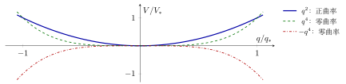
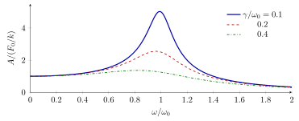
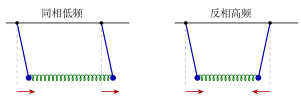
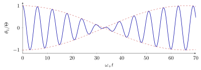
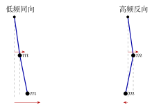
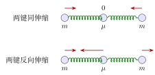
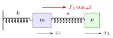
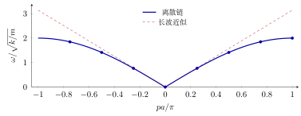
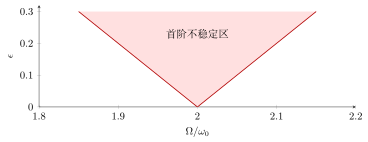

第三章把双摆、弹簧摆等模型写成了拉格朗日方程，但精确方程往往仍是耦合的非线性方程。本章从一个可控的问题出发：在静止平衡附近，哪些项决定最先出现的运动？
核心范围是定常完整约束下、动能正定的自然保守系统，即 \(L=\dot q^{\mathsf T}M(q)\dot q/2-V(q)\)。先找平衡，再用势能曲率与惯性共同求频率；质量加权坐标把耦合振动分解成独立的简正模。随后讨论阻尼、驱动、离散链和长波极限，最后把非线性与参数激励作为拓展。
本章主线：平衡与稳定性 \(\to\) 二次型 \(\to\) 广义本征值 \(\to\) 模态投影 \(\to\) 响应与传播。速度耦合的磁力、旋转系陀螺项、非完整约束与时变平衡不自动服从本章的简单对角化结论。
4.1平衡、稳定与近似的边界
4.1.1平衡点与势能曲率
设 \(q_0\) 是坐标图内部的静止平衡，\(M(q)\) 在邻域内光滑、对称且正定。因 \(\dot q=\ddot q=0\)，第三章的方程给出 \[V_{q_a}(q_0)=0,\qquad a=1,\ldots,s. \tag{4.1}\] 这个条件适用于当前自然系统；含外驱、接触边界或速度势时应重写平衡条件。令 \(\eta=q-q_0\)，Taylor展开为 \[V(q_0+\eta)=V(q_0)+\frac12\eta^{\mathsf T}K\eta+O(\|\eta\|^3), \quad K_{ab}=V_{q_aq_b}(q_0)=K_{ba}. \tag{4.2}\] 一次项因平衡消失，常数项不影响方程。\(K\) 是刚度矩阵；广义坐标可以是长度或角度，其矩阵元不必全有弹簧劲度的单位。对频率有意义的是 \(K\) 与质量矩阵的配对，而非孤立地读取 \(K\) 的本征值。
定义 1.1 (相空间中的稳定性). 平衡状态是 \((q_0,0)\)。若对它的每一个给定小邻域，都存在更小的初始位置和速度邻域，使其中所有初态的未来运动始终留在给定邻域，则称平衡为李雅普诺夫稳定。若不满足此条件，则不稳定；不稳定不必表现为指数增长。若邻近状态还随时间趋近 \((q_0,0)\)，则称渐近稳定。
位置与速度的距离须先用固定尺度无量纲化。只扰动位置而不允许初速度变化，不能检验完整的稳定性。
4.1.2能量判据与零曲率
若 \(K\) 正定，由Taylor展开和 \(M(q)\) 的连续正定性，在足够小邻域中存在正常数，使 \[E-V(q_0)=\frac12\dot\eta^{\mathsf T}M(q_0+\eta)\dot\eta +V(q_0+\eta)-V(q_0) \ge c_1\|\dot\eta\|^2+c_2\|\eta\|^2.\] 在邻域边界上能量有正下界，选择初始能量小于该下界，能量守恒就阻止轨道穿出边界。这给出稳定性证明，也说明保守振子一般不渐近稳定：非零的微小能量不会自动耗散。
后文将证明 \(M_0^{-1/2}KM_0^{-1/2}\) 为实对称矩阵，其中 \(M_0=M(q_0)\)。若它有负本征值 \(\lambda=-\sigma^2\)，相应线性方程含 \(e^{\sigma t}\)，平衡不稳定。若有零本征值，仅凭二次势能无法作出非线性稳定结论；零模的速度还可能引起长期漂移。

例 1.1 (单摆：稳定点与倒立点). 取从竖直向下量起的摆角，\(T=ml^2\dot\theta^2/2\)，\(V=-mgl\cos\theta\)。平衡为 \(\theta=0,\pi\)（模 \(2\pi\)）。在最低点 \[V''(0)=mgl>0,\qquad \omega_0^2=\frac{mgl}{ml^2}=\frac gl.\] 在倒立点令 \(\theta=\pi+\eta\)，线性式为 \(\ddot\eta-(g/l)\eta=0\)，有指数增长解。惯性系的固定支点、无驱动假设不可省去；快速竖直振动支点是另一个时变系统。
例 1.2 (同样零曲率，三种不同运动). 令 \(T=m\dot q^2/2\)。对 \(V=aq^4\)、\(a>0\)，原点为严格极小，能量边界仍证明稳定，但振动不是固定频率的简谐运动。转折振幅为 \(A\) 时 \[T(A)=4\sqrt{\frac{m}{2a}}\frac1A \int_0^1\frac{\mathrm{d}u}{\sqrt{1-u^4}},\] 故频率随 \(A\) 趋零而趋零。对 \(V=-aq^4\)，初态 \(q(0)=\varepsilon>0,\dot q(0)=0\) 满足 \(\ddot q=4aq^3/m>0\)，必离开固定小邻域，原点不稳定。对 \(V=0\)，\(q=q(0)+\dot q(0)t\)；任意小非零初速度都可漂离原点，单个平衡也不稳定。这不排斥把整体平移约化后，内部振动保持稳定。
“很小的力”不等于“能把质点拉回”。正曲率给出与位移同阶的恢复力；四次势阱给出更弱的三次恢复力；平坦方向根本没有恢复力。零频模应保留为自由漂移方程，不能把它当作周期无穷大的普通余弦解而漏掉初速度。
4.2单自由度：自由衰减与受迫响应
4.2.1自由振动与初值
把一维平衡移到 \(q=0\)，线性模型为 \[m\ddot q+kq=0,\quad \omega_0=\sqrt{k/m},\quad m,k>0. \tag{4.3}\] \(m\) 可以是等效惯性，如摆角坐标的 \(ml^2\)。给定 \(q(0)=q_i,\dot q(0)=v_i\)，解为 \[q(t)=q_i\cos\omega_0t+\frac{v_i}{\omega_0}\sin\omega_0t =A\cos(\omega_0t+\phi).\] 因此 \(A^2=q_i^2+v_i^2/\omega_0^2\)，\(E=m\dot q^2/2+kq^2/2=kA^2/2\)。频率 \(\nu=\omega_0/(2\pi)\) 与角频率 \(\omega_0\) 的单位不同。
4.2.2阻尼与功率
线性黏性阻力 \(-c\dot q\)（\(c\ge0\)）对应Rayleigh函数 \(\mathcal R=c\dot q^2/2\)。记 \(\gamma=c/(2m)\)，则 \[\ddot q+2\gamma\dot q+\omega_0^2q=0,\qquad \dot E=-c\dot q^2\le0. \tag{4.4}\] 试解 \(e^{st}\) 得 \(s=-\gamma\pm\sqrt{\gamma^2-\omega_0^2}\)，于是 \[q(t)=\begin{cases} e^{-\gamma t}(A\cos\omega_dt+B\sin\omega_dt),&0\le\gamma<\omega_0,\\ (A+Bt)e^{-\omega_0t},&\gamma=\omega_0,\\ A e^{s_+t}+B e^{s_-t},&\gamma>\omega_0, \end{cases}\quad \omega_d=\sqrt{\omega_0^2-\gamma^2}.\] 临界阻尼是实特征根转为复特征根的边界；对给定惯性和刚度，它的渐近衰减指数优于过阻尼慢支。是否越过平衡、首次回零或进入误差带的时间，仍依赖初值，不能把它一概称为“任何初值下最快返回”。
对这个黏性模型定义品质因数 \(Q=\omega_0/(2\gamma)\)。弱阻尼时，每个近似周期 \(2\pi/\omega_0\) 的能量损失为 \(\Delta E\simeq(4\pi\gamma/\omega_0)E\)，所以 \(Q\simeq2\pi E/\Delta E\)；这里不是 \(E/\Delta E\)，而且单周期近似要求 \(Q\gg1\)。
4.2.3稳态、相位和平均吸收功率 ✦ 交互模拟：受迫振动与共振 ↗
对 \(F_0\cos\omega t\)，\(\omega>0,\gamma>0\)，复振幅法给出 \[\begin{aligned} q_{\rm st}(t)&=\operatorname{Re}[Xe^{i\omega t}]=A\cos(\omega t-\delta),\\ X&=\frac{F_0/m}{\omega_0^2-\omega^2+2i\gamma\omega},\quad A=\frac{F_0/m}{\sqrt{(\omega_0^2-\omega^2)^2+4\gamma^2\omega^2}}. \end{aligned}\tag{4.5}\] 相位用 \(\delta=\operatorname{atan2}(2\gamma\omega,\omega_0^2-\omega^2)\in[0,\pi]\) 确定，不能只用正切忽略象限。总解还含衰减的齐次解；稳态不是任意初值下的瞬时运动。
对振幅分母的平方求导，得到位移峰 \[\omega_R=\sqrt{\omega_0^2-2\gamma^2},\quad \gamma<\omega_0/\sqrt2.\] 更大阻尼没有正频率位移峰。平均输入功率则为 \[\overline P=\frac{F_0A\omega}{2}\sin\delta =m\gamma\omega^2A^2 =\frac{\gamma F_0^2\omega^2/m}{(\omega_0^2-\omega^2)^2+4\gamma^2\omega^2}. \tag{4.6}\] 它恰等于 \(c\overline{\dot q^2}\)，峰在 \(\omega=\omega_0\)。半功率点满足 \(|\omega_0^2-\omega^2|=2\gamma\omega\)，即 \[\omega_\pm=\sqrt{\omega_0^2+\gamma^2}\pm\gamma,\qquad \omega_+-\omega_-=2\gamma.\] 这是功率峰的精确带宽；位移幅值峰的宽度不应与它不加区分。

例 1.3 (有限阻尼响应与无阻尼共振). 令驱动频率为 \(\omega_0\)。若 \(\gamma>0\)，稳态振幅为 \(F_0/(2m\gamma\omega_0)\)，相位滞后 \(\pi/2\)，并不随时间线性发散。若先令 \(\gamma=0\)，则共振方程的特解应取 \(Ct\sin\omega_0t\)： \[\ddot q_p+\omega_0^2q_p=2C\omega_0\cos\omega_0t, \qquad C=\frac{F_0}{2m\omega_0}.\] 零位移、零初速度下该特解就是全解。由此可见，先取长期稳态再令阻尼趋零，与先取无阻尼再观察有限时间，是不同极限。线性发散预告近似终会失效，不证明任何真实系统都按某种固定方式饱和。
4.3从精确方程到简正坐标
4.3.1小参数如何进入
在本章自然系统的假设下，动能精确为 \[T=\frac12\sum_{a,b}M_{ab}(q)\dot q_a\dot q_b. \tag{4.7}\] 逐项求导得到 \[\frac{\mathrm{d}}{\mathrm{d}t}T_{\dot q_a}=\sum_b M_{ab}\ddot q_b+ \sum_{b,c}M_{ab,q_c}\dot q_b\dot q_c,\qquad T_{q_a}=\frac12\sum_{b,c}M_{bc,q_a}\dot q_b\dot q_c.\] 把第二项对 \(b,c\) 对称化，精确方程成为 \[\sum_bM_{ab}(q)\ddot q_b+ \sum_{b,c}\Gamma_{abc}(q)\dot q_b\dot q_c+V_{q_a}(q)=0, \tag{4.8}\] 其中 \[\Gamma_{abc}=\tfrac12(M_{ac,q_b}+M_{ab,q_c}-M_{bc,q_a}).\] \(\Gamma\) 项来自坐标相关惯性，不是另加的外力。
令 \(\eta=q-q_0\)，定义 \(M_0=M(q_0)\) 和精确余项 \[\begin{aligned} \mathcal N_a={}&-\sum_b[M_{ab}(q_0+\eta)-M_{ab}(q_0)]\ddot\eta_b\\ &-\sum_{b,c}\Gamma_{abc}(q_0+\eta)\dot\eta_b\dot\eta_c -\left[V_{q_a}(q_0+\eta)-\sum_bK_{ab}\eta_b\right]. \end{aligned}\] 于是 \(M_0\ddot\eta+K\eta=\mathcal N\) 是精确重写。取固定长度、角度和时间尺度后，令 \(\eta=\epsilon u\)，并要求在考察的固定时间区间上 \(u,\dot u,\ddot u\) 一致有界。三组余项分别是 \(O(\epsilon^2)\)、\(O(\epsilon^2)\)、\(O(\epsilon^2)\)，除以 \(\epsilon\) 后均趋零。因此最低阶方程是 \[M_0\ddot{\mathbf\eta}+K\mathbf\eta=0, \qquad L_2=\tfrac12\dot{\mathbf\eta}^{\mathsf T}M_0\dot{\mathbf\eta} -\tfrac12\mathbf\eta^{\mathsf T}K\mathbf\eta. \tag{4.9}\] 也可直接在 \(L\) 中数总阶次：\(\eta\dot\eta^2\) 是三阶，\(\dot\eta^2\) 是二阶。位移小而速度大不满足这一标度；小非线性频移在很长时间内还会积累相位差，不能把固定区间近似称为任意长时间精确。
\(M_0\) 是“移动这些坐标需要多少惯性”的二次型，\(K\) 是“偏离平衡需要多少势能”的二次型。求频率要同时比较二者。弧度虽无量纲，摆角的惯性仍是转动惯量；把它误写为质点质量，会直接给出错误频率。
4.3.2广义本征值与质量加权
以后简记 \(M=M_0\)。试解 \(\eta=\mathbf{A}e^{i\omega t}\)，得到 \[K\mathbf{A}=\lambda M\mathbf{A},\qquad \lambda=\omega^2,\qquad \det(K-\lambda M)=0. \tag{4.10}\] 行列式方程称为久期方程。有 \(s\) 个实本征值（计重数），但它们为零或负时应分别求自由漂移或指数解，而非一律叫作实振动频率。
为何根一定实、能否总找齐振型？先把各坐标用固定尺度表示为数值，再取正定矩阵 \(M\) 的对称正平方根。令 \[y=M^{1/2}\eta,\qquad D=M^{-1/2}KM^{-1/2}=D^{\mathsf T}.\] 原式变成 \(\ddot y+Dy=0\)。实对称矩阵的谱定理给出正交矩阵 \(O\)，使 \[O^{\mathsf T}DO=\Lambda=\operatorname{diag}(\lambda_1,\ldots,\lambda_s).\] 取 \(G=M^{-1/2}O\)，则 \[G^{\mathsf T}MG=I,\quad G^{\mathsf T}KG=\Lambda,\quad G^{-1}=G^{\mathsf T}M. \tag{4.11}\] 这同时证明了本征值实、振型完备以及质量加权正交。\(M^{-1}K\) 通常不对称，不能直接把它交给只适用于实对称矩阵的数值程序。
设 \(G\) 的第 \(r\) 列为 \(g_r\)，定义质量归一化简正坐标 \[\eta=G\xi,\qquad \xi=G^{\mathsf T}M\eta. \tag{4.12}\] 代入二次型，得到 \[T_2=\tfrac12\sum_r\dot\xi_r^2,\quad V_2=\tfrac12\sum_r\lambda_r\xi_r^2, \qquad \ddot\xi_r+\lambda_r\xi_r=0.\] 对 \(\lambda_r=\omega_r^2>0\)，初值解为 \[\xi_r(t)=(g_r^{\mathsf T}M\eta_i)\cos\omega_rt+ \frac{g_r^{\mathsf T}Mv_i}{\omega_r}\sin\omega_rt. \tag{4.13}\] \(\lambda_r=0\) 时改为 \(\xi_r(0)+\dot\xi_r(0)t\)；\(\lambda_r<0\) 时使用双曲正弦、余弦。若用未归一化振型 \(a_r\) 展开 \(\eta=\sum_r a_r c_r\)，则 \[c_r=\frac{a_r^{\mathsf T}M\eta}{a_r^{\mathsf T}Ma_r},\qquad T_2=\frac12\sum_r(a_r^{\mathsf T}Ma_r)\dot c_r^2.\] 这与质量归一化坐标的公式不同；改变振型长度会改变模态坐标的标度，物理位移保持不变。长度坐标下，\(\xi\) 的单位一般为质量平方根乘长度。
4.3.3正交性、简并、坐标变换与频率估计
若 \(Ka_r=\lambda_rMa_r\)，利用对称性，有 \[a_s^{\mathsf T}Ka_r=\lambda_r a_s^{\mathsf T}Ma_r =\lambda_s a_s^{\mathsf T}Ma_r.\] 故不同本征值的振型满足 \(a_s^{\mathsf T}Ma_r=0\)。重根时该等式本身不强迫正交，但谱定理允许在简并子空间内选质量正交基。重复频率不等于缺少振型；简并空间内的基旋转也不改变运动。
对非零试探方向 \(a\)，Rayleigh商为 \[R(a)=\frac{a^{\mathsf T}Ka}{a^{\mathsf T}Ma}.\] 把 \(a=\sum_r b_rg_r\) 代入，得 \[R(a)=\frac{\sum_r\lambda_rb_r^2}{\sum_r b_r^2},\qquad \lambda_{\min}\le R(a)\le\lambda_{\max}.\] 因此任一试探方向给最低本征值的上界，取遍方向才得到精确最小值；若有平移零模而只估计内部振动，必须先限制在其质量正交补。
换局部坐标 \(\eta=Jz\)，\(J\) 可逆时，\(M_z=J^{\mathsf T}MJ,K_z=J^{\mathsf T}KJ\)，从而 \[\det(K_z-\lambda M_z)=\det(J)^2\det(K-\lambda M).\] 坐标单位或标度改变不改变频率。这也解释了为何只对 \(K\) 做普通对角化通常不够。
求解顺序：先核验平衡和坐标独立性，再求 \(M,K\)；检查对称性及 \(M\) 正定；解广义本征值问题；按质量内积归一化；投影位置和速度初值；最后还原位移，并用原方程残差和能量核验。零模、负模和简并应在求根后分别处理。
若二次拉格朗日量含 \(\dot\eta^{\mathsf T}A\eta\)，常矩阵 \(A\) 的对称部分是全导数，反对称部分却给出 \[M\ddot\eta+(A-A^{\mathsf T})\dot\eta+K\eta=0.\] 其频率方程为 \(\det[K-\omega^2M+i\omega(A-A^{\mathsf T})]=0\)。例如旋转参考系中的科里奥利项属于此类，不能只查 \(K\) 的符号就套用前文判据。理解这一拓展需要第三章的速度耦合及复线性代数；本章核心仍限于无此项的自然系统。
4.4耦合振动的典型模型
4.4.1双振子、耦合摆与拍 ✦ 交互模拟：斜面上的滑块 ↗ ✦ 交互模拟：弹簧摆 ↗
例 1.4 (交叉项的符号决定哪个振型频率低). 设两个长度坐标的二次拉格朗日量为 \[L_2=\frac m2(\dot x^2+\dot y^2) -\frac{m\omega_0^2}{2}(x^2+y^2)+m\kappa xy, \quad 0<\kappa<\omega_0^2.\] \(\kappa\) 的单位为时间的负二次方。方程为 \[\ddot x+\omega_0^2x-\kappa y=0,\qquad \ddot y+\omega_0^2y-\kappa x=0.\] 相加、相减分别得到 \[\ddot c_++(\omega_0^2-\kappa)c_+=0,\quad \ddot c_-+(\omega_0^2+\kappa)c_-=0,\quad c_\pm=\frac{x\pm y}{\sqrt2}.\] 故低频为同相 \((1,1)\)，高频为反相 \((1,-1)\)。直接代回两条原方程是最简单的符号检查。这里 \(T_2=m(\dot c_+^2+\dot c_-^2)/2\)；质量归一化坐标为 \(\xi_\pm=\sqrt m\,c_\pm\)。当 \(\kappa=\omega_0^2\) 出现零模，超过该值势能有下降方向。
例 1.5 (无预紧耦合摆：先确定弹簧伸长). 两个固定支点等高，相距 \(d>0\)；两条轻刚杆长均为 \(l\)，摆锤质量均为 \(m\)。轻弹簧连接两摆锤，自然长度恰为 \(d\)、劲度 \(k>0\)。用同一向右为正的摆角 \(\theta_1,\theta_2\)，两端相对位置差为 \[(d+l\sin\theta_2-l\sin\theta_1,\;l\cos\theta_1-l\cos\theta_2).\] 弹簧长度减 \(d\) 的一阶项为 \(l(\theta_2-\theta_1)\)，所以其二次势能是 \(kl^2(\theta_2-\theta_1)^2/2\)。这一步使用了无预紧假设；若弹簧已有张力，几何长度的二阶项也可能贡献刚度。 \[M=ml^2I,\qquad K=\begin{pmatrix}mgl+kl^2&-kl^2\\-kl^2&mgl+kl^2\end{pmatrix}.\] 令 \(d_\lambda=mgl+kl^2-ml^2\lambda\)，久期式为 \((d_\lambda-kl^2)(d_\lambda+kl^2)=0\)，得到 \[\omega_+^2=g/l,\quad a_+=(1,1)^{\mathsf T};\qquad \omega_-^2=g/l+2k/m,\quad a_-=(1,-1)^{\mathsf T}. \tag{4.14}\] 同相运动中弹簧在该理想几何下长度不变；反相运动增加恢复力。两极限 \(k\to0\) 给两个简并单摆，\(g\to0\) 给整体横向零模与内部伸缩模。

例 1.6 (只释放一只摆：从投影得到拍). 在上一模型中令 \(\theta_1(0)=\Theta,\theta_2(0)=0\)，初速度均为零。分解为两模各一半，得到 \[\begin{aligned} \theta_1&=\tfrac\Theta2(\cos\omega_+t+\cos\omega_-t) =\Theta\cos(\bar\omega t)\cos(\Delta\omega t/2),\\ \theta_2&=\tfrac\Theta2(\cos\omega_+t-\cos\omega_-t) =\Theta\sin(\bar\omega t)\sin(\Delta\omega t/2), \end{aligned}\] 其中 \(\bar\omega=(\omega_-+\omega_+)/2\)、\(\Delta\omega=\omega_--\omega_+>0\)。弱耦合 \(k/m\ll g/l\) 时，快振动由慢包络调制，第一次近乎完全转移发生在 \(t\simeq\pi/\Delta\omega\)。取 \(k/m=0.1g/l\)，则 \(\omega_-/\omega_+=\sqrt{1.2}\)，首次转移约在 \(\omega_+t=32.9\)。
每个简正模的能量恒定。说“能量在两摆间交换”时，局部能量怎样分配耦合弹簧有约定；弱耦合下，分别用两只裸单摆的能量观察交换最直观。\(k\to0\) 时差频趋零，转移时间发散，不发生无耦合能量传递。

4.4.2不等质量与双摆 ✦ 交互模拟：小车与单摆 ↗ ✦ 交互模拟：双摆混沌 ↗
例 1.7 (欧氏不正交，质量内积仍正交). 两质点质量为 \(m,2m\)，左端与墙连接劲度 \(k\) 的弹簧，两质点间连接劲度 \(2k\) 的弹簧，第二质点与右墙也连接劲度 \(2k\) 的弹簧。沿直线的平衡位移为 \(x_1,x_2\)，质量矩阵为 \(M=m\operatorname{diag}(1,2)\)，刚度矩阵为 \[K=k\begin{pmatrix}3&-2\\-2&4\end{pmatrix}.\] 记 \(z=m\lambda/k\)，久期式为 \[(3-z)(4-2z)-4=2(z-1)(z-4)=0.\] 故 \(\omega_1^2=k/m,\omega_2^2=4k/m\)，未归一化振型为 \((1,1)\) 与 \((2,-1)\)。其普通点积为1，而 \[(1,1)M(2,-1)^{\mathsf T}=0.\] 质量归一化矩阵及投影为 \[G=\left(\frac{(1,1)^{\mathsf T}}{\sqrt{3m}}, \frac{(2,-1)^{\mathsf T}}{\sqrt{6m}}\right),\quad \xi_1=\sqrt{\frac m3}(x_1+2x_2),\quad \xi_2=\sqrt{\frac{2m}3}(x_1-x_2). \tag{4.15}\] 代回验证 \(G^{\mathsf T}MG=I\)、\(G^{\mathsf T}KG=\operatorname{diag}(k/m,4k/m)\)。若 \(x(0)=(a,0),\dot x(0)=0\)， \[x(t)=\frac a3(1,1)^{\mathsf T}\cos\sqrt{k/m}\,t +\frac a3(2,-1)^{\mathsf T}\cos(2\sqrt{k/m}\,t).\] 初始总能量为 \(3ka^2/2\)，两模能量分别为 \(ka^2/6\) 与 \(4ka^2/3\)，相加一致。
例 1.8 (双摆：同样两根杆，惯性有交叉项). 沿用第三章的两个绝对摆角，取 \(m_1=m_2=m,l_1=l_2=l\)，在最低平衡展开。二次型为 \[T_2=\tfrac12ml^2(2\dot\theta_1^2+2\dot\theta_1\dot\theta_2+\dot\theta_2^2),\quad V_2=\tfrac12mgl(2\theta_1^2+\theta_2^2).\] 这里两杆之间没有弹簧，耦合来自下球速度包含上球运动。 \[M=ml^2\begin{pmatrix}2&1\\1&1\end{pmatrix},\quad K=mgl\begin{pmatrix}2&0\\0&1\end{pmatrix}.\] 令 \(z=\omega^2l/g\)，行列式给出 \[(2-2z)(1-z)-z^2=z^2-4z+2=0.\] 因此 \[\omega_{\rm low}^2=(2-\sqrt2)g/l,\quad a_{\rm low}=(1,\sqrt2)^{\mathsf T};\qquad \omega_{\rm high}^2=(2+\sqrt2)g/l,\quad a_{\rm high}=(1,-\sqrt2)^{\mathsf T}. \tag{4.16}\] 以第一行求角度比 \(a_2/a_1=2(1-z)/z\)，即可独立检查正负。两振型质量范数平方为 \(ml^2(4\pm2\sqrt2)\)，且彼此质量正交。给定小角初值后应按式 (4.13) 投影，不能各自用单摆频率 \(\sqrt{g/l}\)。

4.4.3纵向三原子模型与零模 ✦ 交互模拟：三原子链简正模 ↗
例 1.9 (伸缩频率与质心分离). 三个质点沿轴运动，质量为 \(m,\mu,m\)，两条相同轻弹簧劲度为 \(k\)，用 \(x_i\) 表示相对平衡的轴向位移。模型只保留纵向自由度： \[M=\operatorname{diag}(m,\mu,m),\quad V_2=\tfrac k2(x_2-x_1)^2+\tfrac k2(x_3-x_2)^2,\quad K=k\begin{pmatrix}1&-1&0\\-1&2&-1\\0&-1&1\end{pmatrix}.\] 先直接作用于 \((1,1,1)\)，得零本征值。其坐标是质心平移，\(X_{\rm cm}=(mx_1+\mu x_2+mx_3)/(2m+\mu)\) 满足 \(\ddot X_{\rm cm}=0\)。
取端点反向 \(a_1=(1,0,-1)\)，有 \(Ka_1=(k/m)Ma_1\)，故 \(\omega_1^2=k/m\)。再取端点同向 \((1,b,1)\)，非零模必须与平移模质量正交，因而 \(2m+\mu b=0\)，\(b=-2m/\mu\)。第一行方程给出 \[\omega_2^2=\frac{k}{m}(1-b)=k\left(\frac1m+\frac2\mu\right),\qquad a_2=(1,-2m/\mu,1).\] 三组范数平方分别为 \(2m+\mu,2m,2m+4m^2/\mu\)，除以各自范数就得到 \(G\)。每个非零模满足总动量为零；例如 \(\mu\to\infty\) 时中心近乎固定，两伸缩频率趋于简并。
为防止“同相”命名歧义，直接看两段键长变化 \(\delta d_1=x_2-x_1,\delta d_2=x_3-x_2\)：第一伸缩模两段同时伸长/缩短，是对称伸缩；第二伸缩模一长一短，是反对称伸缩。原子位移的对称性还须考虑空间反演使矢量反向。

这个模型说明质量、刚度与伸缩频率的关系；同位素改变质量而近似保留势能曲率，是应用广义本征值的一个切入点。但真实分子还有横向、转动自由度和电子结构。一个模能否被红外或拉曼观测到，还分别取决于偶极矩或极化率随该模是否变化，不能把所有数学振型都说成吸收峰。继续学习需三维振动、对称性及电磁耦合；本例不拟合具体分子的实验谱线。
4.5模态受迫响应与阻尼的限制
4.5.1广义力如何激发某个模
若有小外力向量 \(f(t)\) 和线性黏性矩阵 \(C=C^{\mathsf T}\ge0\)，则 \[M\ddot\eta+C\dot\eta+K\eta=f(t),\qquad \dot E_2=\dot\eta^{\mathsf T}f-\dot\eta^{\mathsf T}C\dot\eta. \tag{4.17}\] 采用无阻尼振型 \(\eta=G\xi\) 并左乘 \(G^{\mathsf T}\)，得到 \[\ddot\xi+C_N\dot\xi+\Lambda\xi=f_N(t),\qquad C_N=G^{\mathsf T}CG,\quad f_N=G^{\mathsf T}f.\] 模态力 \(f_{N,r}=g_r^{\mathsf T}f\) 不是 \(g_r^{\mathsf T}Mf\)；质量已经在惯性归一化中处理。对 \(\Lambda>0\) 且 \(C_N\) 为对角阵的情形，每个模有独立响应 \[\xi_r^{\rm st}=\operatorname{Re}\left[ \frac{g_r^{\mathsf T}F}{\omega_r^2-\omega^2+i c_r\omega}e^{i\omega t}\right],\qquad c_r=(C_N)_{rr}.\] 若模态力为零，即使驱动频率靠近该本征频率，也不激发这个模。阻尼为零时，该式只适用于非共振特解，并不意味着初始自由响应会消失。
一个常用而受限的选择是比例阻尼 \(C=\alpha M+\beta K\)，此时 \[C_N=\alpha I+\beta\Lambda,\quad c_r=\alpha+\beta\omega_r^2,\] \(\alpha\) 的单位为时间的负一次方，\(\beta\) 为时间。只要求模型总 \(C\) 半正定；\(\alpha,\beta\ge0\) 是保证它的一种充分选择。
例 1.10 (一个局部阻尼器一般耦合无阻尼模). 取式 (4.15) 的两质量模型，只在第一质点与墙之间加阻尼器，\(C=\operatorname{diag}(c,0)\)。则 \[C_N=\frac c m\begin{pmatrix}1/3&\sqrt2/3\\\sqrt2/3&2/3\end{pmatrix}.\] 非对角元不为零，两个无阻尼简正坐标通过速度耦合。尽管 \(\dot E_2=-c\dot x_1^2\le0\)，不能分别往两个独立简谐方程随意加衰减率；弱阻尼下忽略非对角项也需额外论证。一般谐波响应应直接解 \[(K-\omega^2M+i\omega C)X=F.\] 能量不增本身不保证任一模型的所有模都会衰减到零；可能存在阻尼看不到的运动方向。
例 1.11 (调谐吸振器：共振之外还有反共振). 主质量 \(m\) 由劲度 \(k\) 的弹簧连墙，附加质量 \(\mu\) 通过劲度 \(\kappa\) 的弹簧连主质量，均沿直线无摩擦运动。对主质量施加 \(F_0\cos\omega t\)，两个平衡位移为 \(x_1,x_2\)，有 \[M=\begin{pmatrix}m&0\\0&\mu\end{pmatrix},\quad K=\begin{pmatrix}k+\kappa&-\kappa\\-\kappa&\kappa\end{pmatrix},\quad F=(F_0,0)^{\mathsf T}.\] 无阻尼、避开本征频率时，解两条代数方程得 \[\begin{aligned} X_1&=\frac{(\kappa-\mu\omega^2)F_0}{D(\omega)},\quad X_2=\frac{\kappa F_0}{D(\omega)},\\ D(\omega)&=(k+\kappa-m\omega^2)(\kappa-\mu\omega^2)-\kappa^2. \end{aligned}\] 当 \(\omega_a^2=\kappa/\mu\) 时，\(D=-\kappa^2\ne0\)，因此 \[X_1=0,\qquad X_2=-F_0/\kappa.\] 附加弹簧力恰好抵消驱动，主质量的受迫分量为零，这是反共振，不是整个系统没有运动。取调谐条件 \(\kappa/\mu=k/m\)，即可在原主振子频率消除理想特解的主质量位移；两个新本征频率则由 \(D=0\) 给出。
该结论针对指定频率的无阻尼特解。任意初值会叠加不衰减的自由振动；阻尼、失谐和有限行程也会改变零点附近响应。因此不能据此宣称任意扰动或任意频率都被消除。

4.6从有限链到长波连续极限
4.6.1周期边界、色散与模态计数 ✦ 交互模拟：周期链色散与群速度 ↗
把 \(N\ge3\) 个质量为 \(m\) 的质点放在一维周期单元中，相邻间隔为 \(a\)，纵向位移为 \(u_n\)，周期边界 \(u_{n+N}=u_n\)。这里只把周期边界当作理想无限链的有限近似，不引入实际圆环弯曲的几何力。相邻弹簧劲度均为 \(k\)，则 \[m\ddot u_n=k(u_{n+1}+u_{n-1}-2u_n). \tag{4.18}\] 试解 \(u_n=Ae^{i(pna-\omega t)}\)，周期边界要求 \(p=2\pi j/(Na)\)，\(j\) 为整数。代入并消去公共因子，得到 \[-m\omega^2=k(e^{ipa}+e^{-ipa}-2)=-4k\sin^2(pa/2),\] 所以 \[\omega(p)=2\sqrt{k/m}\,|\sin(pa/2)|. \tag{4.19}\] \(p\) 与 \(p+2\pi/a\) 在所有格点给同一位形，因此取第一布里渊区 \(-\pi<pa\le\pi\) 就足够；并非区外完全没有数学表示。\(p=0\) 是整体平移零模。
对 \(0<pa<\pi\)，\(\pm p\) 是同频的复共轭对，实基可选 \(\cos pna\) 与 \(\sin pna\)。它们合起来只有两个实位形自由度，不能把共轭波数再各算两个。若 \(N\) 偶数，\(pa=\pi\) 的格点正弦恒零，只剩一个交替位移模；这加上零模和其余波数对，恰给 \(N\) 个实坐标。

4.6.2相速度、群速度与边界
对正波数，定义 \[v_{\rm ph}=\omega/p,\qquad v_g=\frac{\mathrm{d}\omega}{\mathrm{d}p}=a\sqrt{k/m}\cos(pa/2).\] 群速度描述在无限或足够长的无耗散链中，窄波数包络的传播；有限环会有回返，单个驻波也没有可以追踪的行进包络。长波 \(|pa|\ll1\) 时两速度均趋 \(c_s=a\sqrt{k/m}\)；区边界相邻格点反相、\(v_g=0\)，但 \(\omega=2\sqrt{k/m}\) 并不为零。
例 1.12 (固定端与周期端不可混用). 另取 \(N\) 个活动质点，左右固定端 \(u_0=u_{N+1}=0\)。令振型为 \(u_n=A\sin(pna)\)，边界给 \[p_j a=\frac{j\pi}{N+1},\quad \omega_j=2\sqrt{k/m}\sin\frac{j\pi}{2(N+1)},\quad j=1,\ldots,N.\] 全部频率正，无整体平移模。最小频率在大 \(N\) 时约为 \(\pi c_s/[(N+1)a]\)。同样的局部弹簧方程，不同边界改变允许波数和模态形状；不能只记色散式而丢掉边界条件。
4.6.3长波展开与连续能量
用平滑场 \(u(x,t)\) 插值格点，\(x=na\)，Taylor展开使奇数空间导数相消： \[u(x+a)+u(x-a)-2u(x) =a^2u_{xx}+\frac{a^4}{12}u_{xxxx}+\cdots.\] 保留最低阶得 \[u_{tt}=c_s^2u_{xx},\qquad c_s^2=ka^2/m. \tag{4.20}\] 忽略项相对大小约为 \((pa)^2/12\)。这个近似只用于长波，不能把截断高阶方程任意外推到区边界。
连续质量密度 \(\rho=m/a\)，纵向弹性系数 \(\mathcal C=ka\)，离散能量相应趋于 \[T\simeq\frac12\int\rho u_t^2\,\mathrm{d}x,\qquad V\simeq\frac12\int\mathcal C u_x^2\,\mathrm{d}x,\qquad c_s^2=\mathcal C/\rho.\] 变分给出波动方程，同时边界项为 \(\mathcal C u_x\delta u\)：固定端取 \(\delta u=0\)，自由端取 \(\mathcal C u_x=0\)。本例是纵向弹性链，不能把 \(k\) 直接当作弦张力。若真的取 \(a\to0\) 且保持有限连续介质，须按 \(m=\rho a,k=\mathcal C/a\) 缩放；固定 \(m,k\) 而只令 \(a\to0\) 会使声速趋零。
每个正频简正坐标都是谐振子。若进一步量子化，其能级为 \(E_n=\hbar\omega(n+1/2)\)，振动量子称为声子；这里需要量子谐振子基础。零频整体平移不能照搬这一束缚振子能级式。色散给频率与波数关系，但有限温度热输运还需模占据、边界及散射，不是由本章无耗散链单独决定。
4.7进一步探索：线性理论之外
本节不把弱非线性结果混入前文的精确线性叠加。它回答两个问题：被略去的项首先改变什么？周期改变参数为何不同于施加外力？
4.7.1幅频移动与组合频率 ✦ 交互模拟：单摆周期修正 ↗
例 1.13 (对称四次势能的首阶频移). 取 \[V(q)=\tfrac12m\omega_0^2q^2+\tfrac14\beta q^4,\qquad \ddot q+\omega_0^2q+\frac\beta m q^3=0.\] \(\beta\) 在势能和方程中的含义保持一致。令转折振幅为 \(A\)，小参数为 \(|\beta|A^2/(m\omega_0^2)\ll1\)。最低阶取 \(q=A\cos\omega t\)，用 \(\cos^3z=(3\cos z+\cos3z)/4\)，基频项系数为 \[A\left[-\omega^2+\omega_0^2+\frac{3\beta A^2}{4m}\right].\] 消除这一阶的基频残差，得到 \[\omega=\omega_0+\frac{3\beta A^2}{8m\omega_0} +O\left(\omega_0\left[\frac{\beta A^2}{m\omega_0^2}\right]^2\right). \tag{4.21}\] 还存在小三次谐波，不能说解仍是精确正弦。\(\beta>0\) 为硬化，\(\beta<0\) 为局部软化；负四次项在大位移不提供全局束缚，本近似只在原点附近小能量势阱内使用。若势能另有三次项，其二阶效应也可贡献频移，不能照搬这个对称势公式。
例 1.14 (从明确的耦合势产生和频、差频). 取三个等效质量 \(m\) 的坐标，势能含 \(\epsilon c q_1q_2q_3\)，\(c\) 的单位使该项为能量；\(\epsilon\) 为无量纲小参数。在有限时间的最低阶，令 \[q_1^{(0)}=A\cos\omega_1t,\qquad q_2^{(0)}=B\cos\omega_2t,\] 则第三模的一阶受迫式含 \[\ddot q_3+\omega_3^2q_3 =-\frac{\epsilon c AB}{2m} [\cos(\omega_1+\omega_2)t+\cos(\omega_1-\omega_2)t].\] 非共振时，一个频率 \(\nu\) 的力 \(f\cos\nu t\) 给特解 \(f\cos\nu t/(\omega_3^2-\nu^2)\)；若 \(\nu=\omega_3\)，首阶特解为 \(ft\sin\omega_3t/(2\omega_3)\)。这表示普通展开将出现长期失效，须跟踪各模振幅反馈，不能把线性增长当成封闭非线性系统的无限能量来源。此三次势也只作为局部模型，远处可需高阶稳定项。
4.7.2主参数共振的慢变振幅推导
例 1.15 (刚度调制如何克服阻尼). 取 \[\ddot q+2\gamma\dot q+\omega_0^2[1+\epsilon\cos\Omega t]q=0, \quad 0<\epsilon\ll1,\quad \delta=\Omega-2\omega_0=O(\epsilon\omega_0),\quad \gamma=O(\epsilon\omega_0). \tag{4.22}\] 当 \(\gamma=0\) 时，这是马蒂厄方程的一种参数化。设 \(\nu=\Omega/2\)， \[q=a(t)\cos\nu t+b(t)\sin\nu t,\] \(a,b\) 在一个振动周期内缓慢变化。略去二阶慢导数及高频 \(3\nu\) 项，由余弦、正弦项分别得 \[\begin{aligned} 2\nu\dot b+2\gamma\nu b+(\omega_0^2-\nu^2+\epsilon\omega_0^2/2)a&=0,\\ -2\nu\dot a-2\gamma\nu a+(\omega_0^2-\nu^2-\epsilon\omega_0^2/2)b&=0. \end{aligned}\] 在这些小量的一阶精度下，记 \(h=\epsilon\omega_0/4\)，化成 \[\frac{\mathrm{d}}{\mathrm{d}t}\begin{pmatrix}a\\b\end{pmatrix} =\begin{pmatrix}-\gamma&-\delta/2-h\\\delta/2-h&-\gamma\end{pmatrix} \begin{pmatrix}a\\b\end{pmatrix}.\] 两个慢指数为 \[s_\pm=-\gamma\pm\sqrt{h^2-\delta^2/4}. \tag{4.23}\] 因此无阻尼主不稳定区在首阶为 \(|\delta|<\epsilon\omega_0/2\)。有阻尼时需 \(h^2>\gamma^2+\delta^2/4\)；正调谐 \(\delta=0\) 的阈值为 \(\epsilon>4\gamma/\omega_0\)。边界附近高阶修正会影响判断，这不是任意调制深度下的精确稳定图。
调制中的瞬时机械能取 \[E(t)=\tfrac m2\dot q^2+\tfrac{m\omega_0^2}2[1+\epsilon\cos\Omega t]q^2, \quad \dot E=-2m\gamma\dot q^2-\frac{m\omega_0^2\epsilon\Omega}{2}\sin\Omega t\,q^2.\] 第二项是改变刚度的机构输入/取出的功率。\(q\equiv0\) 仍为精确解；“不稳定”表示存在增长的微扰，不表示零初态自行产生非零运动，也不是每个特选初值都会增长。

完整周期系数问题可用Floquet方法：将两个独立初值解推进一个调制周期，组成单周期矩阵，检查其本征乘子。无阻尼时行列式为1；在边界处即使乘子模为1，也要检查是否有Jordan块引起线性增长。NIST的马蒂厄稳定图使用标准参数 \((a,q)\)，若要比较，先作 \(z=\Omega t/2\)，得到 \[\frac{\mathrm{d}^2q_{\rm osc}}{\mathrm{d}z^2}+[a-2q_{\rm M}\cos2z]q_{\rm osc}=0,\quad a=\frac{4\omega_0^2}{\Omega^2},\quad q_{\rm M}=-\frac{2\epsilon\omega_0^2}{\Omega^2}.\] 这里 \(q_{\rm osc}\) 是位移，\(q_{\rm M}\) 是马蒂厄参数，二者不同；这一映射限于无阻尼式。
4.7.3自激、分岔与混沌：不由二次型包办
范德波尔模型可写成无量纲形式 \[x''-\mu(1-x^2)x'+x=0,\quad \mu>0,\] 撇号表示对无量纲时间求导，\(x\) 也无量纲。能量 \(e=(x'^2+x^2)/2\) 满足 \(e'=\mu(1-x^2)x'^2\)，小位移区可注入能量，大位移区可耗散。弱 \(\mu\) 下令 \(x\simeq A\cos(\tau+\phi)\)，用 \[\overline{x'^2}=A^2/2,\quad \overline{x^2x'^2}=A^4/8,\] 得到 \(A'=\mu A(1-A^2/4)/2\)。\(A=2\) 是这一平均方程的稳定振幅，不是任意 \(\mu\) 下精确正弦轨道；相位还与初始条件有关。原点精确初态仍停在原点，极限环也不是保守系统的能量等高线。
分岔研究的是改变参数后解的结构如何改变。例如 \(V(q)=rq^2/2+bq^4/4\)、\(b>0\)，平衡为 \(q=0\) 及 \(r<0\) 时的 \(q=\pm\sqrt{-r/b}\)；\(r=0\) 处二次曲率消失，必须保留四次项。混沌则需更丰富的动力学，不能从单个频移、拍或短时轨道分离就断定；二维光滑自治范德波尔系统的平面极限环也不等于混沌。进一步研究需非线性方程、相空间与稳定性理论，超出本章简正模求解。
4.8计算与模拟：用残差和收敛检验模型
伴随脚本 review/verify_ch04.py 使用标准Python库，结果保存在
ch04_verification_results.json
主要检查包括：
对每个解析振型计算 \(Ka_r-\lambda_rMa_r\)，并核验 \(G^{\mathsf T}MG\) 和 \(G^{\mathsf T}KG\)；检查初值重建及两模能量之和。
独立积分等质量双摆精确方程，与本章小角解比较。在固定时间区间逐次减小初角，同时加密步长，区分非线性误差和积分误差；不能要求线性近似任意长期保持相位。
对有限链检查允许波数、零模与固定端谱；数值核验色散的长波相对误差按 \((pa)^2\) 缩小。
用一个调制周期的两个独立解求Floquet乘子，在舌形区内外各取参数点，并与首阶慢指数比较；边界附近须提高精度，不只凭图的颜色判断。
所有数值参数为教学设定，不代表实验材料参数或工程性能。
关键概念与常见误区
势能驻点先于稳定性判断；正定曲率给稳定性，零曲率一般无结论，零频也不一定代表稳定的单个平衡。
简正模解耦的是指定线性化自然系统；磁场、陀螺项、非比例阻尼及周期系数须另作处理。
本征值是 \(\omega^2\)，频率需结合质量矩阵；振型按质量内积正交，整体标度可以自选但投影必须一致。
位移峰、吸收功率峰、反共振零点是不同响应特征；驱动空间分布也决定模能否被激发。
周期端与固定端的允许波数不同；实模数目要避免重复计数复共轭波数。
拍是线性叠加，参数共振由时变系数供能，非线性组合共振是又一种机制。
本章小结
第三章的拉格朗日量在平衡附近展开后，以动能和势能二次型组织主要运动；正定惯性使问题归结为实对称广义本征值，质量正交基给出初值投影与模态能量。阻尼、驱动与边界决定实际响应，离散链的长波极限连接连续波动。下一章把内部距离固定，转而研究刚体的整体平动和转动；刚体转动的惯量张量与本章质量二次型相呼应，但有限转角与姿态几何仍需专门处理。
分层习题
稳定的定义。 对 \(V=aq^4,-aq^4,0\)，\(a>0\)，分别判断原点平衡的稳定性。说明为什么“没有指数增长”不构成稳定性证明。
位形相关惯性。 对 \(L=m(1+q^2/l^2)\dot q^2/2-kq^2/2\)，写精确方程，取 \(q/l=O(\epsilon)\) 判断惯性非线性首次出现的阶次，并求小振动频率。
阻尼与返回。 临界阻尼下取 \(q(0)=q_i>0,\dot q(0)=v_i\)，求 \(q(t)\)。什么初速度会使其越过原点？计算瞬时能量导数。
不同的共振峰。 从受迫响应推导位移幅值峰与平均功率峰，核验半功率带宽 \(2\gamma\)；解释只给相位正切为何不能确定高频响应的相位。
交叉项与简并。 对交叉项例题独立代入两个振型。若 \(\kappa=0\)，能否选择两个不正交振型？为什么仍可选择质量标准正交基？
投影与能量。 对 \(M=m\operatorname{diag}(1,2),K=k\bigl(\begin{smallmatrix}3&-2\\-2&4\end{smallmatrix}\bigr)\)，取 \(x(0)=(0,a),\dot x(0)=0\)，求两个质量归一化模态初值、物理位移和总能量。
坐标标度。 对上题改用 \(z_1=x_1,z_2=2x_2\)，求新的 \(M_z,K_z\)，核验频率不变。
Rayleigh上界。 对等质量等长双摆取试探角度比 \((1,1)\)，估计最低频率上界，并与精确值 \((2-\sqrt2)g/l\) 比较。
双摆初值。 等质量等长双摆从 \((\theta_1,\theta_2)=(\Theta,0)\) 静止释放，求两角的线性解，并验证初始加速度。
拍与激发选择。 耦合摆的两广义力矩若为 \((\tau,\tau)\cos\omega t\)，激发哪个模？改为 \((\tau,-\tau)\) 呢？从位移初值叠加推导首次包络转移时间。
三原子与质量扰动。 对三质点模型写完整质心运动和两个伸缩模。若中间质量 \(\mu\) 增大，哪一频率不变、哪一频率降低？能否仅由频率断言出现红外吸收峰？
非比例阻尼。 核验正文单阻尼器的 \(C_N\)。若改用 \(C=\alpha M+\beta K\)，求各模阻尼比，并讨论模态外力为零的情况。
吸振器。 取 \(m=\mu,k=\kappa\)，求两个本征频率和主质量反共振频率，说明自由响应未衰减时的限制。
模态计数。 列出 \(N=8\) 周期链的允许波数与全部 \(\omega^2\)，标明零模和重数；再写 \(N=3\) 固定端链的频率平方。
连续极限。 从离散能量推出 \(\rho=m/a,\mathcal C=ka\)，解释保持声速不变的缩放。计算 \(pa\ll1\) 时离散频率相对长波近似的首项误差。
弱非线性。 推导对称四次势的首阶频移，说明负 \(\beta\) 的大振幅限制；给出三模耦合的一项和频特解及其共振极限。
参数共振。 取 \(\omega_0=1,\epsilon=0.1\)，用首阶式求 \(\delta=0\)、\(0.1\) 时无阻尼慢指数；若 \(\gamma=0.03\)，正调谐还会增长吗？注明近似精度。
数值复核。 运行伴随脚本，检查本征残差、双摆振幅缩小的误差、步长误差及Floquet乘子。哪些检验针对物理近似，哪些针对数值算法？为什么短时能量准确不足以证明长期相位准确？
解题思路与结果
正四次势稳定；负四次势不稳定；平坦势的单个平衡在允许速度扰动时不稳定。能量边界证明第一种，单调加速与线性漂移分别证明后两种，后二者无需指数模。
精确式为 \(m(1+q^2/l^2)\ddot q+mq\dot q^2/l^2+kq=0\)。固定时间尺度上 \(q,\dot q,\ddot q=O(\epsilon)\) 时，惯性修正是三阶；\(\omega_0=\sqrt{k/m}\)。
\(q=[q_i+(v_i+\omega_0q_i)t]e^{-\omega_0t}\)。当 \(v_i<-\omega_0q_i\) 时有正时间越零；\(\dot E=-2m\omega_0\dot q^2\)。无振荡复根不等于任何初态都不越零。
分别极小化 \(A\) 分母与极大化 \(\omega^2A^2\)，得正文两峰。半功率根相差 \(2\gamma\)。高频时分母实部负，滞后角趋 \(\pi\)，不是趋0。
\((1,1)\) 给 \(\omega_0^2-\kappa\)，\((1,-1)\) 给 \(\omega_0^2+\kappa\)。简并时任何独立线性组合都是本征基，但用非正交基不能直接写对角归一化能量；可在质量内积下作Gram–Schmidt正交化。
\(\xi_1(0)=2a\sqrt{m/3},\xi_2(0)=-a\sqrt{2m/3}\)，故 \[x=\frac{2a}{3}(1,1)^{\mathsf T}\cos\omega_1t -\frac a3(2,-1)^{\mathsf T}\cos\omega_2t.\] \(E_1=2ka^2/3,E_2=4ka^2/3\)，和为初始势能 \(2ka^2\)。
\(x=Jz,J=\operatorname{diag}(1,1/2)\)，所以 \[M_z=m\operatorname{diag}(1,1/2),\quad K_z=k\begin{pmatrix}3&-1\\-1&1\end{pmatrix}.\] 久期根仍为 \(k/m,4k/m\)。
\(R(1,1)=3g/(5l)=0.6g/l\)，略高于 \((2-\sqrt2)g/l\simeq0.5858g/l\)。这是最低频率平方的上界。
两个未归一化振型的系数均为 \(\Theta/2\)，故 \[\theta_1=\tfrac\Theta2(\cos\omega_{\rm low}t+\cos\omega_{\rm high}t),\quad \theta_2=\tfrac\Theta{\sqrt2}(\cos\omega_{\rm low}t-\cos\omega_{\rm high}t).\] 初加速度为 \(\ddot\theta_1(0)=-2g\Theta/l,\ddot\theta_2(0)=2g\Theta/l\)，与 \(-M^{-1}K\theta(0)\) 一致。
同向力矩只激发同相模，反向力矩只激发反相模；在完全对称模型中由 \(g_r^{\mathsf T}f\) 直接判断。首次包络转移时间 \(\pi/(\omega_--\omega_+)\)，裸摆能量几乎全转移需弱耦合解释。
\(X_{\rm cm}=X_0+V_0t\)，内部模分别沿 \((1,0,-1)\) 和 \((1,-2m/\mu,1)\)。\(\omega_1^2=k/m\) 不变，\(\omega_2^2=k/m+2k/\mu\) 降低。是否红外活性还需偶极矩变化，频率本身不够。
\(C_N\) 见正文，有非零非对角元；比例阻尼时 \(\zeta_r=(\alpha+\beta\omega_r^2)/(2\omega_r)\)，限正频模。\(g_r^{\mathsf T}F=0\) 时该模没有这项受迫激励，但可能有初始自由运动。
\(\omega_{1,2}^2=(3\mp\sqrt5)k/(2m)\)，\(\omega_a^2=k/m\) 位于二者之间。无阻尼任意初态含额外自由解，不能保证主质量总位移为零。
周期链 \(pa=0,\pm\pi/4,\pm\pi/2,\pm3\pi/4,\pi\)。以 \(k/m\) 为单位的平方频率依次为 \(0,2-\sqrt2\)（二重）、\(2\)（二重）、\(2+\sqrt2\)（二重）、\(4\)。三质点固定端为 \((2-\sqrt2,2,2+\sqrt2)k/m\)。
把求和换成 \(\int\mathrm{d}x/a\)，并用 \(u_{n+1}-u_n\simeq au_x\)。连续缩放 \(m=\rho a,k=\mathcal C/a\)。\(\omega/(c_s|p|)=1-(pa)^2/24+O((pa)^4)\)，故线性长波近似略高估离散频率。
基频项平衡给式 (4.21)，尚有三次谐波。和频 \(\nu=\omega_1+\omega_2\) 的非共振特解为 \[q_{3,p}=-\frac{\epsilon cAB}{2m(\omega_3^2-\nu^2)}\cos\nu t.\] 精确共振需改用 \(-\epsilon cABt\sin\omega_3t/(4m\omega_3)\)，不能直接代入非共振式。
\(h=0.025\)；\(\delta=0\) 时 \(s=\pm0.025\)；\(\delta=0.1\) 时 \(s=\pm i\sqrt{0.05^2-0.025^2}\)，首阶无增长。正调谐加 \(\gamma=0.03\) 后最大慢指数为 \(-0.005\)，首阶判为衰减。有限 \(\epsilon\) 的精确边界须单周期矩阵进一步核验。
振幅缩小比较检验线性近似；步长减半比较检验积分误差；本征残差与能量是互补约束。相位误差可以长期累积而能量误差仍很小，混沌系统的细节还对初值敏感。
进一步阅读与来源
查阅日期：2026-11-05。正文算例按本书坐标、边界和符号重新推导，数值均为教学设定。
Iain Stewart，MIT 8.09，Chapter 3: Vibrations & Oscillations。可对照广义坐标展开、同时对角化与简正坐标；本书另明确零模及含速度项的适用边界。
MIT 8.09，Problem Set 4。双摆与弹簧支承杆的题目可作独立训练：先自行建立动能和势能，再画振型，而不是只代入已有矩阵。本章题目与解答按本书模型另行编写。
NIST Digital Library of Mathematical Functions，§28.17: Mathieu稳定区。进一步学习精确特征曲线；比较前必须使用正文给出的参数映射，不把弱调制的一阶直线当作完整稳定边界。